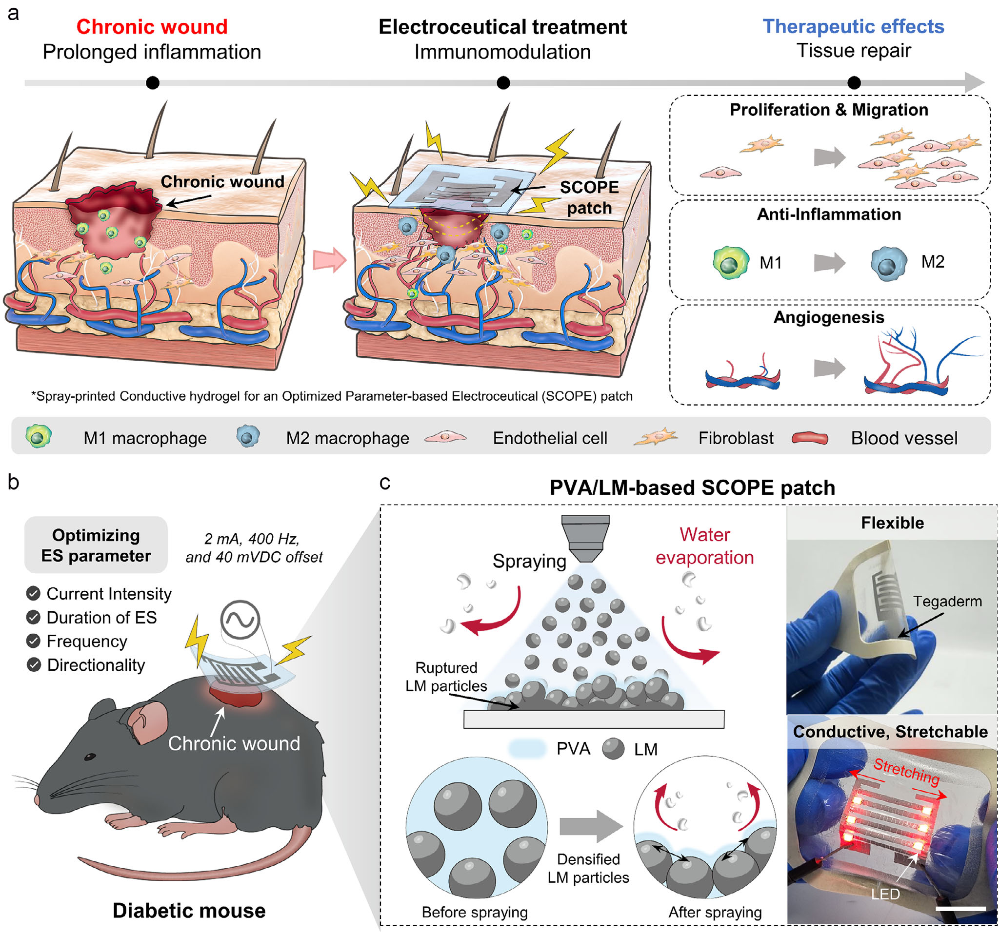

Overview
This study, by researchers at the BLISS Lab (Jungmok Seo) at Yonsei University and Sungkyunkwan University, screens electrical stimulation (ES) parameters for their effect on inflammatory macrophages and delivers the selected conditions through a spray-printed poly(vinyl alcohol) (PVA)/liquid metal (LM) patch, termed SCOPE. Unidirectional current at 2 mA for 4 h per day suppressed pro-inflammatory markers in vitro, and in mice with streptozotocin-induced type 1 diabetes, the remaining wound area on day 3 was 23.4 ± 4.0% with optimized direct current versus 66.8 ± 19.7% without stimulation.
Background
In diabetic wounds, macrophages remain in a pro-inflammatory M1 state and the transition toward reparative M2 activity is impaired. ES has been reported to modulate inflammation and promote re-epithelialization and angiogenesis, but clinical studies differ in current type, intensity, frequency and duration, and most have varied a single parameter. Delivery hardware poses a second problem: rigid metal or carbon electrodes do not conform to irregular, moving wounds, and hydrogel or elastomer electrodes often show low conductivity and resistance changes under deformation. Gallium-based LMs are highly conductive, but their surface tension and coalescence make stable patterning on soft substrates difficult.
Design and approach
The authors first screened current type, intensity, daily duration, timing, AC frequency and current direction on an indium tin oxide (ITO) culture platform. For delivery, LM (75 wt% gallium, 25 wt% indium) is sonicated into 5 wt% PVA solution at a PVA:LM mass ratio of 1:1.5, forming a Ga2O3 shell on the droplets that hydrogen-bonds with PVA hydroxyl groups. The ink is sprayed through a laser-cut mask onto Tegaderm or PDMS. During spraying, rapid water evaporation densifies the LM particles and the impact ruptures their oxide shells, forming continuous conductive paths without a separate sintering step, which screen-printing did not achieve to the same extent. Spraying at 25 psi from 2 cm gave 0.1 mm features and a 17 ± 1 µm thick layer.

Preclinical overview linking electrical-stimulation parameter screening with spray printing of the SCOPE patch.
Jung Hyun Kim, Soo A Kim, Seung Hyun Lee et al. “Optimized Electrical Stimulation Using a Spray‐Printed Conductive Electroceutical Patch for Accelerated Wound Healing in Diabetic Mice”. Figure 1. DOI: 10.1002/adhm.202504939. CC BY 4.0. Figure content is unchanged.
Source figure and caption ↗ · DOI: 10.1002/adhm.202504939 ↗ · CC BY 4.0 ↗
How it was evaluated
LPS-induced M1 RAW 264.7 macrophages were analyzed by flow cytometry and immunofluorescence (CD86, iNOS, CD206), calcium imaging and RT-qPCR of ion channel genes after 7 d of stimulation. Human dermal fibroblasts (CCD986SK) were tested for viability, proliferation, scratch migration and cytokine secretion under optimized direct current (O-DC, 2 mA) and optimized offset AC (O-AC, 2 mA, 400 Hz). Spray-printed and screen-printed patches were compared for surface chemistry, resistance over 7 d, strain and cyclic loading, swelling, hydrated and exudate stability, and cytocompatibility. In vivo, 6 mm full-thickness dorsal wounds in STZ-induced type 1 diabetic male C57BL/6 mice received O-DC or O-AC through the patch for 4 h per day over 12 d, compared with non-treated wounds and, in a separate cohort, with a patch applied without stimulation.
Key results
With DC stimulation, a 4 h daily duration and 2 mA intensity gave the largest reduction of CD86 and the lowest iNOS among 1–10 mA, while CD206 did not change. Stimulation continued until the end of the culture period reduced CD86 and iNOS even when applied for only one day, whereas stimulation that stopped early did so only when applied for all 7 d. Among AC frequencies of 50–800 Hz, 400 Hz gave the lowest marker expression. Unidirectional AC with offset and O-DC suppressed CD86 and iNOS, lowered intracellular calcium, downregulated Trpm2 and Kcna3 and upregulated Scnn1a, whereas bidirectional AC without offset produced no significant change.
In fibroblasts, neither optimized condition was cytotoxic, and both increased proliferation after 7 d. The remaining scratch area at 24 h, reported in the text as wound closure rate, was 38.2 ± 8.4% with DC and 41.0 ± 9.1% with AC versus 61.2 ± 12.5% without stimulation. Under both conditions, TNF-α secretion from RAW 264.7 macrophages and IL-6 and IL-1β secretion decreased, VEGF secretion from fibroblasts increased, and TGF-β did not change significantly.
Conductivity rose from about 2 × 10^4 S m−1 at 10 psi to about 1.4 × 10^5 S m−1 at 40 psi. Over 7 d at room temperature, the screen-printed patch's resistance increased by about 35% by day 3, while the spray-printed patch changed minimally. Under strain, the screen-printed patch reached R/R0 ≈ 2.6 at 30% and then lost signal, whereas the spray-printed patch stayed at R/R0 ≈ 1.0–1.3 up to 30% and near 1 over 1000 cycles at 20% strain. On Tegaderm and PDMS it remained functional to about 70% strain, and in the hydrated state to about 150%. The swelling ratio stayed below about 0.7 over 48 h, XPS showed no change after 7 d in artificial wound exudate, and no LM residue was seen on wounds after 3 and 5 d of application.
In diabetic mouse wounds, the remaining wound area on day 3, reported in the text as wound closure rate, was 23.4 ± 4.0% with O-DC and 34.7 ± 7.3% with O-AC versus 66.8 ± 19.7% in non-treated wounds (n = 3). The patch without stimulation did not change wound closure over 7 d. On day 12, both stimulated groups showed thicker epidermis, fewer infiltrating immune cells, a significantly smaller CD86-positive area and significantly more CD31-positive regions; the CD206 increase was not significant, and collagen deposition was significantly higher only with O-DC. TNF-α in wound tissue was lower on day 4, and IL-10 was higher on day 12, significantly so with O-DC.
Open questions
The authors noted that a wired system was used to ensure controlled and reproducible stimulation, which may limit direct clinical applicability, and that wireless adaptation is needed. They also stated that it remains unclear whether the unidirectional current strategy would have similar effects in volumetric tissues such as muscle or internal organs.
Related research
Wireless, closed-loop, smart bandage with integrated sensors and stimulators for advanced wound care and accelerated healing
DOI: 10.1038/s41587-022-01528-3 ↗
The related bandage adjusts stimulation through temperature and impedance feedback. SCOPE emphasizes stimulation-parameter screening and a deformable patch.
Abstract-based introductionRESEARCH NEWS
Research in the news
Sources used in this summary
This summary is based on the main text, figure legends and Methods of the published CC BY 4.0 version of record (17 pages); the supporting information (Figures S1–S25) and source data were not reviewed.